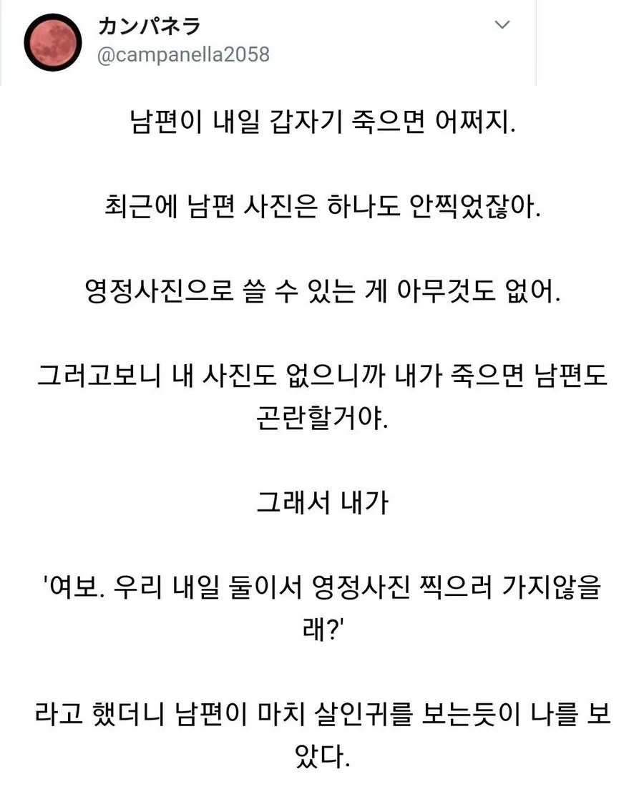

남편이 내일 갑자기 죽으면 어쩌지?
댓글
널 죽일거야
??? : 사진은 찍고 나서 죽었네. 다행이다.
반드시 널 죽이고말태다
ㅋㅋㅋㅋ뭔가 단편 럽코 도입부같네
계곡 좋은 곳 알아놨어
유서 써놔
사랑해
사진찍고 출출하니 계곡가서 백숙먹고 오자
??? : 어이! 죽을 시간이다.
죽어랏 ㅋㅋㅋ
갑자기 살인예고를
??? : 10억을 받았습니다
그 변명 판사앞에서도 하실 수 있습니까?

널 죽일거야
??? : 사진은 찍고 나서 죽었네. 다행이다.
반드시 널 죽이고말태다
ㅋㅋㅋㅋ뭔가 단편 럽코 도입부같네
계곡 좋은 곳 알아놨어
유서 써놔
사랑해
사진찍고 출출하니 계곡가서 백숙먹고 오자
??? : 어이! 죽을 시간이다.
죽어랏 ㅋㅋㅋ
갑자기 살인예고를
??? : 10억을 받았습니다
그 변명 판사앞에서도 하실 수 있습니까?
유서도 써놓으라구